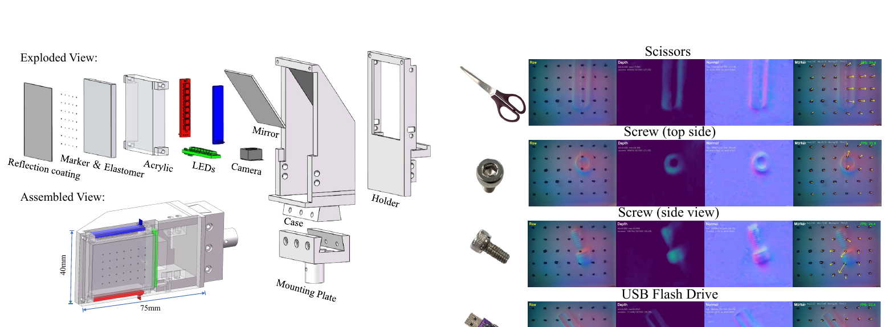

Controlled real-robot study · LeRobot-compatible
Which Physical Tactile Cues Matter for Contact-Rich Imitation Learning?
A Controlled Real-Robot Study
School of Information Science and Technology, ShanghaiTech University
01 · Overview
Disentangling touch, one physical cue at a time

Abstract
Vision-based tactile sensors capture contact appearance, geometry, indentation depth, and tangential deformation in a single image stream. Yet policies often treat these observations as ordinary images, making it difficult to identify which physical cues drive learning.
We introduce an open, LeRobot-compatible visuo-tactile platform and derive tactile RGB, normal/depth maps, and marker-flow fields from the same sensor stream. Under matched demonstrations and policy backbones, we compare cue representations, tactile encoders, and visuo-tactile fusion strategies across three contact-rich tasks.
02 · Method
A controlled LeRobot visuo-tactile pipeline
Every comparison shares the same demonstrations, visual observations, robot state, Diffusion Policy backbone, and training budget.

Tactile appearance
Raw tactile RGB preserves local contact patterns and color changes caused by elastomer deformation.
Contact geometry
Surface normals and depth describe local shape and indentation of the tactile surface.
Tangential deformation
Marker-flow fields track image-plane displacement, exposing shear and contact regulation cues.

03 · Experiments
Three tasks, three contact regimes
The evaluation spans in-gripper adjustment, sustained tangential contact, and tight-clearance insertion.
Tube reorientation
Adjust a tube inside the gripper, then insert it into a holder despite partially occluded contact.
Blackboard wiping
Maintain stable surface contact while moving tangentially across the target region.
Peg-in-hole insertion
Align and insert under tight clearance, where small contact errors produce jams or drops.

04 · Results
Full tactile is consistently strong
Success rates are measured over 30 real-robot trials for every configuration and task.
Primary study
Which physical cues matter?
Full tactile raises aggregate success from 57.8% to 78.9%. Individual cues are task dependent, while the combined input produces the strongest or joint-strongest result on every task.
| Input | Tube | Wiping | Peg |
|---|---|---|---|
| Vision only | 46.7% | 60.0% | 66.7% |
| + Tactile RGB | 73.3% | 80.0% | 66.7% |
| + Normal/depth | 66.7% | 63.3% | 70.0% |
| + Marker flow | 73.3% | 76.7% | 73.3% |
| + Full tactile | 76.7% | 83.3% | 76.7% |
Secondary study
How should touch be encoded and fused?
With the full-tactile input fixed, cross-attention improves aggregate success by 4.4-6.7 percentage points. Encoder effects remain task dependent.
| Encoder / fusion | Tube | Wiping | Peg |
|---|---|---|---|
| ResNet · Concat. | 76.7% | 83.3% | 76.7% |
| ResNet · Cross-Attn. | 80.0% | 90.0% | 86.7% |
| Sparsh-DINO · Concat. | 86.7% | 83.3% | 80.0% |
| Sparsh-DINO · Cross-Attn. | 90.0% | 90.0% | 83.3% |
Conclusion
Touch is not one signal.
Physically interpretable tactile cues contribute at different interaction stages. Controlled evaluation makes those contributions visible and provides practical guidance for sensor, representation, and policy design.
Read the paper